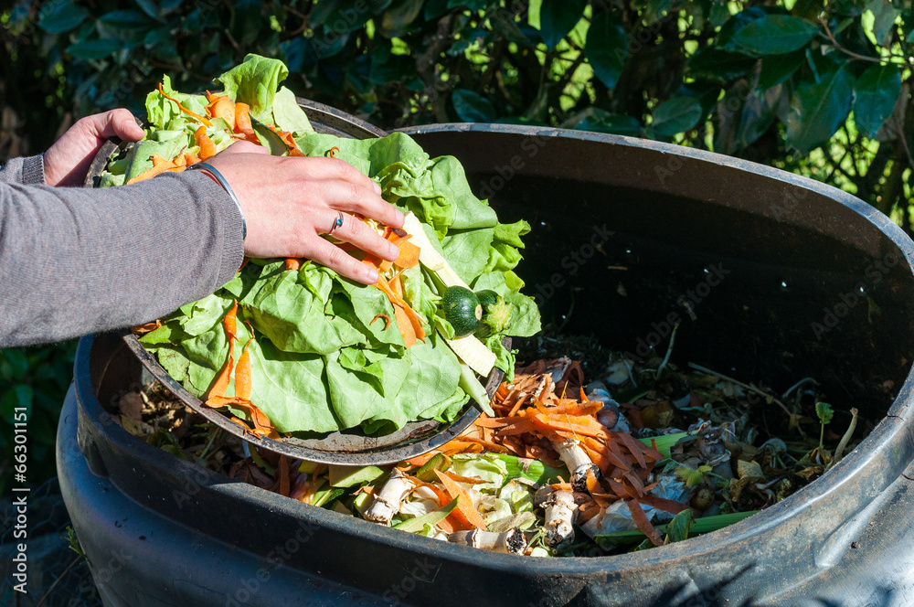
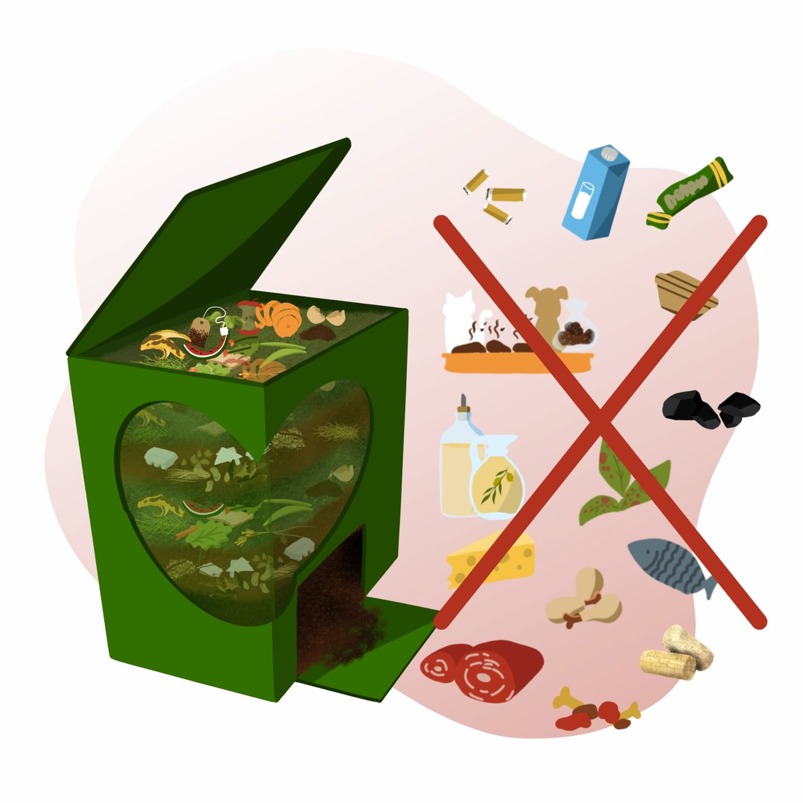

🌿 Do’s
- ✅ Add fruit and vegetable scraps
- ✅ Include coffee grounds and filters
- ✅ Mix in leaves and small branches
- ✅ Keep compost moist but not soaked
- ✅ Turn compost regularly to add air
🚫 Don’ts
- ❌ Avoid meat or dairy products
- ❌ Don’t compost oily or greasy foods
- ❌ No pet waste or diseased plants
- ❌ Avoid plastic, glass, or metals
- ❌ Don’t let compost dry out completely
Remember: balance greens and browns for best compost quality!